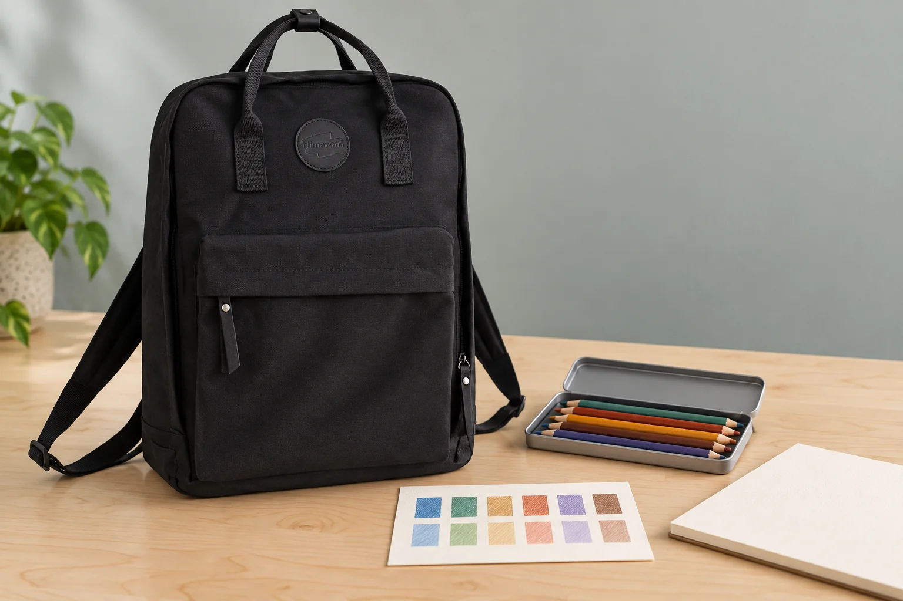

필통을 넣은 백팩, 책이 누르는 면부터 보기

필통을 닫아 백팩에 넣었는데 집에서 꺼내보면 한쪽이 눌려 있을 수 있습니다. 가방 안의 남은 틈에 들어갔다는 사실과 필통이 자연스러운 모양으로 놓이는 것은 다른 조건입니다. 책과 기기, 충전 도구가 어느 면에서 닿는지 살펴보면 필통 자리를 고를 근거가 생깁니다. 필기구의 뚜껑을 점검한 뒤에는 그것을 담은 케이스 전체의 외형을 봅니다.
같은 수의 펜을 담아도 둥근 필통과 납작한 케이스가 차지하는 자리는 다릅니다. 빈 필통을 대보는 대신 평소 도구를 넣어 자연스럽게 닫은 모습을 준비합니다. 긴 지퍼 손잡이나 돌출된 모서리가 있다면 그 부분도 다른 물건과 만날 수 있습니다. 필통만 따로 볼 때의 모양과 가방에 넣은 뒤의 모양을 비교하는 단계입니다.
넓은 면으로 닿는 책과 좁게 닿는 모서리
필통 옆에 책의 넓은 표지가 놓일 때와 두꺼운 책의 모서리가 한쪽에 닿을 때를 구분해봅니다. 실제로 서로 맞닿는 위치가 어떤지 가방을 내려놓고 볼 수 있습니다. 필통을 위로 올렸더니 파일 모서리 위에 걸쳐지는 구성이면 다른 방향을 생각할 수 있습니다. 빈 공간이 있다는 이유만으로 케이스의 일부를 떠받치는 자리로 고르지 않습니다.
둥근 필통을 책 위에 가로로 얹으면 큰 책을 꺼낼 때 함께 움직일 수 있습니다. 세로로 두었을 때는 아래쪽으로 내려가 잡기 어려워질 수도 있습니다. 어느 배치가 맞는지는 자신의 가방 구조와 필통의 길이에 달려 있습니다. 한 번 넣는 것에서 멈추지 않고 책을 꺼낸 뒤 필통이 어디에 남는지 이어서 봅니다. 반복해서 같이 빠져나오는 두 물건은 위치를 나눌 이유가 됩니다.
Himawari No.1084H 제품 정보의 검정 원본에서는 가는 앞면 지퍼와 네모에 가까운 본체를 볼 수 있습니다. 현재 외부 크기는 가로 28.5 × 세로 39 × 폭 12cm입니다. 필통이 들어갈 내부의 깊이나 포켓 치수는 이 숫자로 결정할 수 없습니다. 자신의 닫힌 필통과 평소 책을 함께 대조해 배치를 볼 자료이며 특정 케이스의 수납을 확인한 조합은 아닙니다.

단단한 작은 짐은 필통과 다른 묶음으로
충전 플러그나 열쇠를 필통 옆의 빈틈에 넣으면 어디를 누르는지 보이지 않을 수 있습니다. 각 물건의 보관 방식에 맞춰 한 묶음으로 두고 필통과 닿는 면을 살펴봅니다. 작은 파우치에 모아두면 위치를 옮길 때 함께 움직여 배치를 읽기 쉽습니다. 파우치까지 넣은 모양을 기준으로 보아야 느슨한 소품만 놓았을 때와 비교할 수 있습니다.
제품이 안내하는 사용 범위를 따르고 뚜껑과 여밈이 당겨지는지 실제로 봅니다. 부드러운 필통은 많이 채운 날의 외형을 함께 확인합니다. 가방을 닫으려고 필통을 한 손으로 계속 누르고 있다면 그 상태를 남기기 전에 내용물과 다른 짐의 위치를 다시 정할 필요가 있습니다.
긴 필기구를 쓰는 사람은 케이스의 끝부분도 살펴봅니다. 필통 몸체는 놓여 있어도 끝이 가방의 곡선이나 다른 파우치 아래로 들어갈 수 있습니다. 가방 입구를 닫았을 때 끝부분이 어디에 있는지 봅니다. 필통을 더 짧게 만들 수 없는 구성이라면 케이스를 바꾸기보다 다른 방향이나 별도 운반을 검토할 수 있습니다.
자주 쓰는 날에는 잡을 끝을 남겨두기
수업마다 필통을 꺼내는 날과 외출 중 한 번만 쓰는 날은 필요한 접근이 다릅니다. 자주 꺼낼 필통이 책 아래에 있으면 그때마다 책을 옮기게 됩니다. 두 물건이 나란히 놓일 자리가 있는지, 위쪽에서 필통을 잡을 수 있는지 살펴봅니다. 손으로 잡기 쉬운 부분을 남기되 가방 밖으로 필통을 걸친 채 여밈을 열어두는 방식으로 대신하지 않습니다.
책상에 도착해 필통을 꺼냈다면 빈자리가 이후 다른 물건으로 채워지는지도 봅니다. 책 한 권을 빼고 충전기를 넣은 뒤에는 처음과 다른 모양이 될 수 있습니다. 필통을 되담을 때 원래 들어갔다는 기억으로 밀어 넣지 않고 현재 배치를 한 번 살핍니다. 가방 안의 자리를 사용 뒤에도 이어가야 출발할 때 만든 구성이 유지됩니다.
새로 산 도구가 추가되면 필통의 닫힌 두께가 달라집니다. 같은 필통이라는 이유로 이전의 여유가 그대로 남아 있을 것으로 생각하지 않습니다. 평소 쓰지 않는 도구를 덜어낼지, 필통을 더 넉넉한 것으로 바꿀지 실제 용도를 봅니다. 백팩을 크게 바꾸는 선택에 앞서 케이스 하나의 외형이 어떻게 달라졌는지 확인할 수 있습니다.
눌린 자리가 있다면 방향을 기록하기
필통에서 낯선 눌림이나 여밈의 당김을 발견하면 현재 상태를 사진으로 남길 수 있습니다. 어느 물건과 닿아 있었는지, 출발 뒤 추가한 짐이 있었는지 자신이 아는 범위를 적습니다. 확인되지 않은 원인을 특정 가방이나 도구 때문이라고 바로 정하지 않습니다. 제품 관리 안내가 필요한 상태면 그 자료로 문의할 수 있습니다.
다음 배치에서는 한 가지 위치만 바꾸어봅니다. 책 위에 있던 필통을 허용된 옆자리로 옮기거나 단단한 소품 묶음과 거리를 두는 식입니다. 다른 물건의 수와 구성이 그대로여야 무엇이 달라졌는지 알기 쉽습니다. 새 위치에서 필통을 꺼내고 다시 담는 동작이 가능한지도 같이 확인합니다. 눌림만 피하려다가 접근이 크게 번거로워질 수 있기 때문입니다.
평소 백팩을 비우는 날에는 필통 아래에 남은 작은 부품이나 종이도 함께 봅니다. 필통의 자리를 다른 소품의 임시 보관칸으로 쓰고 있었다면 그 물건의 위치를 따로 정합니다. 필요한 도구를 닫힌 필통에 담고 그 모양이 무리 없이 놓일 면을 남겨두세요. 책을 꺼낸 뒤에도 필통이 다시 돌아갈 경로가 보이면 배치를 다음 외출에 이어 쓸 수 있습니다.